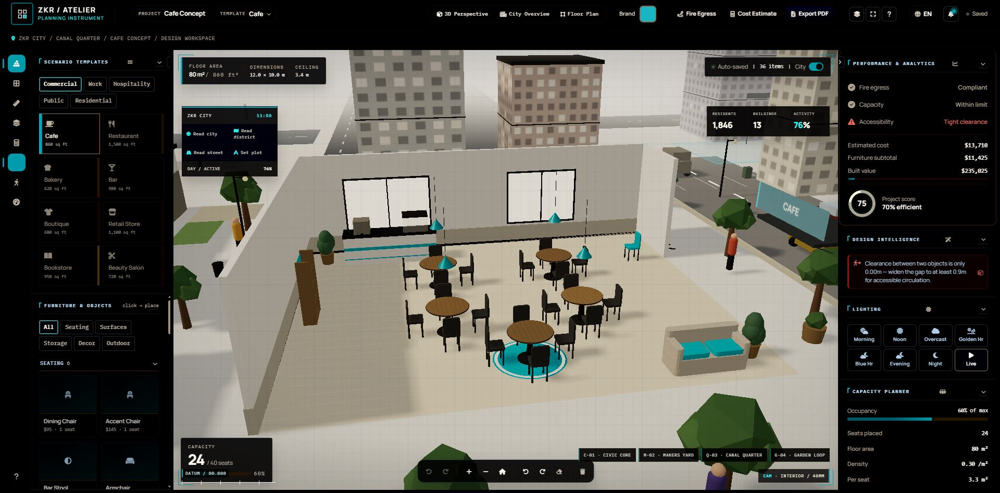
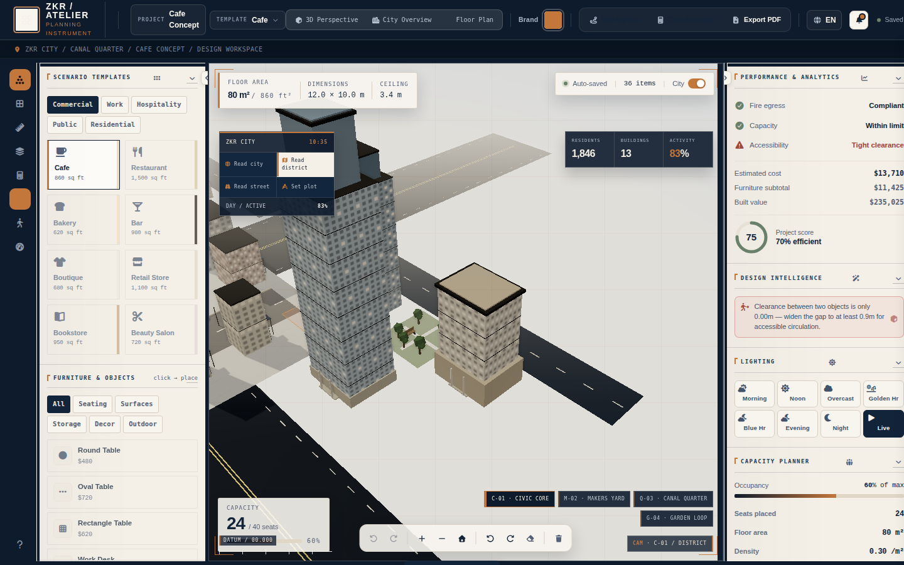
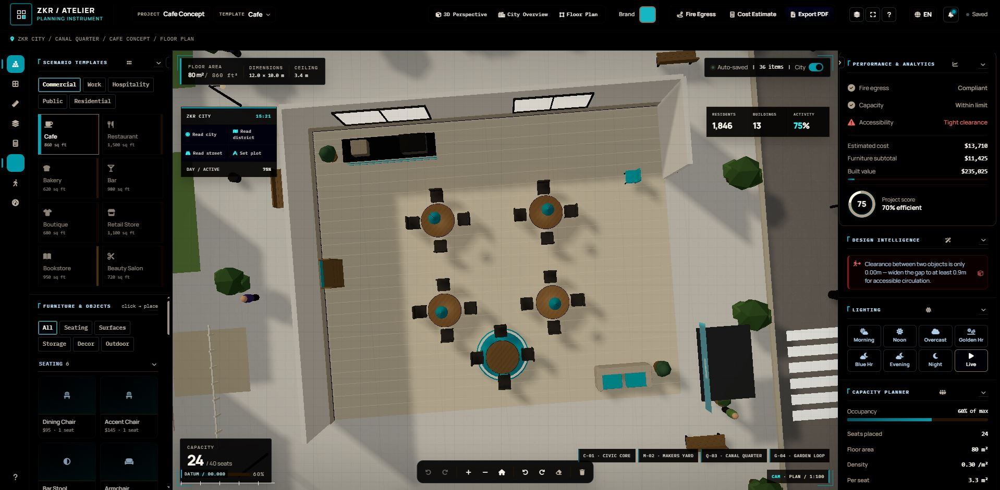
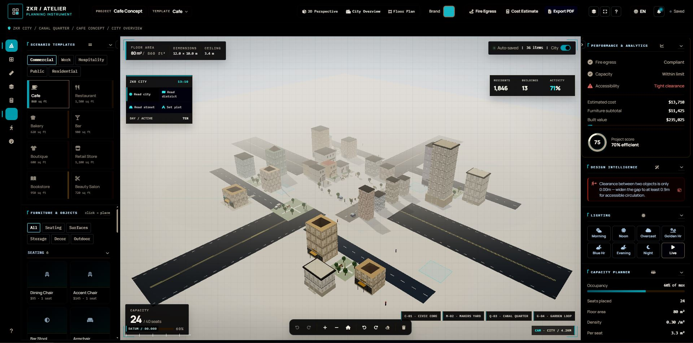
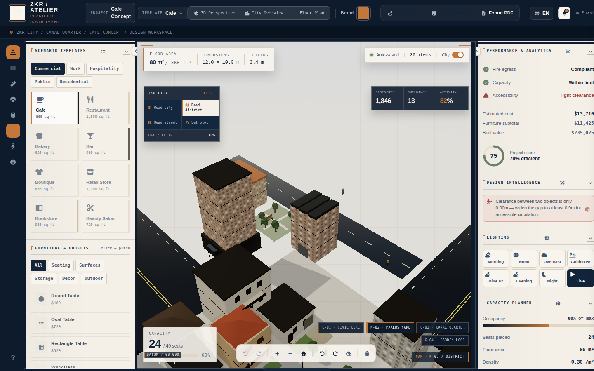
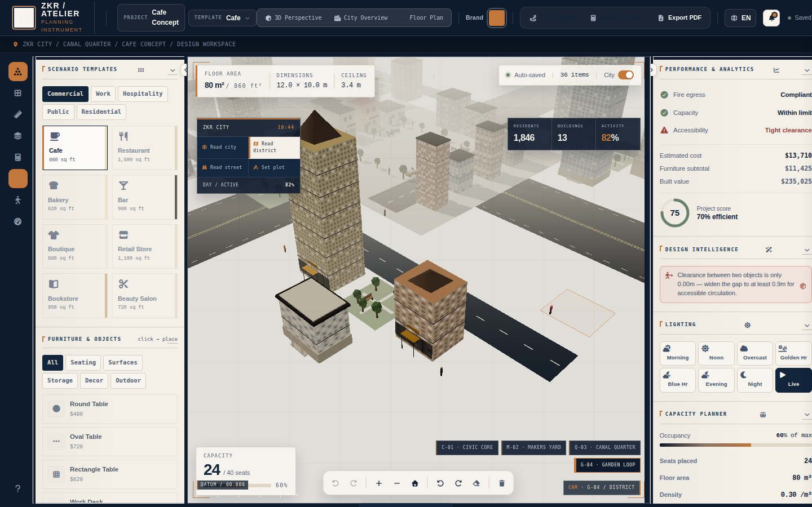

Design, measure and verify a floor plan in one workspace.
ZKR Atelier is a browser-based 3D planning tool for laying out commercial interiors — place furniture and objects on a real floor plate, check clearances and egress against set thresholds as you work, measure distances, estimate cost, and export a client-ready report — without leaving the scene.

The problem
Early interior and site layout work is usually split across a floor-plan sketch, a separate spreadsheet for code compliance and cost, and a rendering tool for client presentation — three disconnected artifacts that drift out of sync the moment the layout changes.
What ZKR Atelier does
A single scene is the source of truth. Placing, moving or resizing an object immediately re-runs the same clearance/egress analysis that feeds the Accessibility card, the 3D compliance overlay, the inspector and the exported PDF — so those four views can never disagree with each other.
What's actually in the workspace
Three capabilities carry the product. The rest support them.
Real-time 3D scene
Three.js-driven viewport with 3D perspective, city-overview and floor-plan camera modes — the same scene throughout, not three separate views.
Spatial & compliance analysis
One analysis pass checks fire egress, clearance and accessibility, and drives the 3D overlay, the inspector and the exported report from that single result.
Client-ready PDF export
Generates a report of the current layout and its analysis in the browser — built with jsPDF, no server round-trip.
Press M, click a point, read a live running distance as you move.
One panel that adapts to the selection — an object's properties, or a flagged issue and its fix.
Ctrl/⌘+K — only the actions runnable in the current mode and selection.
Furniture subtotal, built value and seating capacity update live as the plan changes.
A distraction-free walkthrough view for clients, with a single-key exit.
Commercial, hospitality and public-space starting points instead of a blank plot.
The actual workspace
Screenshots taken directly from the application — same interface you'll land in.





How a session actually runs
- 01
Pick a template
Start from a scenario template or a blank plot, and set the plot dimensions.
- 02
Place & arrange
Add furniture and objects from the catalog directly into the 3D scene.
- 03
Check & measure
Read live compliance status, measure distances, and resolve flagged clearance issues.
- 04
Present & export
Switch to presentation mode for a walkthrough, then export a PDF report of the result.
Open the workspace
No sign-up. The current scenario loads directly into the workspace.